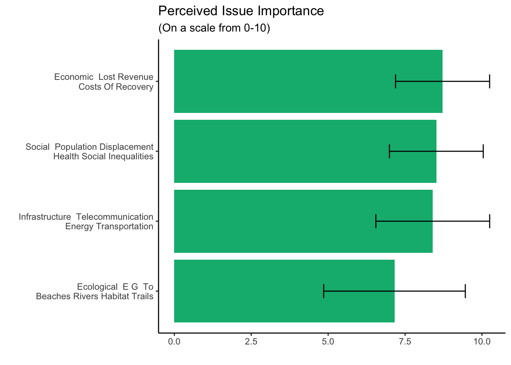

Southeast Texas Flood Governance
A network analysis
Code
#for some reasont his needs to be hardcoded
df <- readRDS("data/interim/survey_data.rds")Drivers and Impact
Let’s take a quick look at the data. Lots of columns!
Code
drivers <- df |>
select(
response_id,
name,
starts_with("below_are_a_list_of_drivers"),
starts_with("below_are_a_list_of_flood")
) |>
#renaming for comprehensibility purposes
rename_with(
~ gsub(
'below_are_a_list_of_drivers_of_flood_risk_using_the_slider_tool_please_indicate_how_important_each_issue_below_is_to_you_your_organization_1_not_important_10_extremely_important',
'drivers',
.x
)
) |>
rename_with(
~ gsub(
'below_are_a_list_of_flood_impacts_using_the_slider_tool_please_indicate_how_important_each_issue_below_is_to_you_your_organization_1_not_important_10_extremely_important',
'impacts',
.x
)
)
#table
drivers |>
kbl() |>
kable_styling() |>
scroll_box(height = "500px")| response_id | name | drivers_changing_precipitation_and_weather_patterns | drivers_geographic_and_geophysical_factors_topography_proximity_to_water_bodies | drivers_physical_roads_and_drainage_infrastructure | drivers_population_growth_and_distribution_of_people | drivers_socio_economic_factors_and_local_economy | drivers_other | drivers_other_text | impacts_ecological_impacts_e_g_impacts_to_beaches_rivers_habitat_trails | impacts_economic_impacts_lost_revenue_costs_of_recovery | impacts_infrastructure_impacts_telecommunication_energy_transportation | impacts_social_impacts_population_displacement_health_social_inequalities | impacts_other_number_1 | impacts_other_number_1_text | impacts_other_number_2 | impacts_other_number_2_text |
|---|---|---|---|---|---|---|---|---|---|---|---|---|---|---|---|---|
| R_1KpdjfE0Y1Udiye | United Way of Beaumont & North Jefferson County | 10 | 10 | 10 | 0 | 8 | NA | NA | 2 | 10 | 3 | 10 | NA | NA | NA | NA |
| R_2Bsz9PsQpCfKU4c | Lamar University Flood Coordination Study | 9 | 9 | 9 | 4 | 4 | NA | NA | 7 | 9 | 10 | 8 | NA | NA | NA | NA |
| R_3KZK61AXfhRiXVp | Floodplain Administration, Jasper County | 8 | 6 | 9 | 7 | 9 | NA | NA | 6 | 9 | 10 | 7 | NA | NA | NA | NA |
| R_wTWDyysttK0M1ZD | Lower Neches Valley Authority | 7 | 10 | 9 | 6 | 0 | NA | NA | 7 | 7 | 10 | 5 | NA | NA | NA | NA |
| R_22tYUShHQ0qtaC6 | Jefferson County Drainage District No 7 | 8 | 10 | 10 | 8 | 5 | 10 | Storm Surge | 8 | 10 | 9 | 10 | NA | NA | NA | NA |
| R_21EpMTdtcbnzKum | National Weather Service Houston/Galveston Weather Forecast Office | 10 | 10 | 10 | 10 | 8 | NA | NA | 10 | 10 | 10 | 8 | NA | NA | NA | NA |
| R_3HwcwSLgOwlOUhP | The Salvation Army Beaumont | 10 | 10 | 10 | 10 | 10 | 10 | Climate Change | 10 | 10 | 10 | 10 | NA | NA | NA | NA |
| R_277JgB4fU4mzTm9 | City of Beaumont, Texas | 10 | 7 | 8 | 6 | 6 | 7 | Commercial Development | 6 | 8 | 8 | 7 | NA | NA | NA | NA |
| R_2qEjtrLqH9965qG | NOAA/National Weather Service Lake Charles | 3 | 9 | 8 | 9 | 8 | NA | NA | 3 | 10 | 10 | 9 | NA | NA | NA | NA |
| R_10BPHhZLdISvmeK | DDEOC Beaumont (State of Texas Disaster District EOC) | 7 | 8 | 8 | 6 | 6 | 8 | Lake, River water levels, ocean tides | 6 | 10 | 10 | 10 | NA | NA | NA | NA |
| R_1dKLhr88d2SnvSw | Sabine Pass Port Authority | 7 | 7 | 8 | 5 | 5 | NA | NA | 7 | 8 | 8 | 6 | NA | NA | NA | NA |
| R_3KQ8a8KJ8DyiCnD | Orange County Drainage District | 8 | 6 | 7 | 6 | 3 | NA | NA | 3 | 5 | 6 | 9 | NA | NA | NA | NA |
| R_27VwRek0stq0xBR | Texas Oil and Gas Association | 7 | 9 | 9 | 9 | 10 | NA | NA | 9 | 9 | 10 | 8 | NA | NA | NA | NA |
| R_XFkTEv1a3KV3M9r | Chambers County Floodplain Administrator | 10 | 10 | 10 | 10 | 10 | NA | NA | 10 | 10 | 10 | 10 | NA | NA | NA | NA |
| R_2fE7Ag89BkmmDai | Jefferson County Drainage District No. 6 | 10 | 10 | 10 | 3 | NA | NA | NA | 10 | 10 | 7 | 9 | NA | Pissed tax payers | NA | NA |
| R_1FQA34wdXJqNK4C | FEMA - FM& I | 8 | 10 | 8 | 9 | 9 | 10 | RISK & MITIGATION | 9 | 10 | 8 | 10 | NA | NA | NA | NA |
| R_3kLdEYbP3ROSdT8 | City of Houston, Houston Public Works | 8 | 10 | 10 | 10 | 8 | NA | NA | 7 | 10 | NA | 8 | NA | NA | NA | NA |
| R_2YPSvF7sxsS6z3C | South East Texas Regional Planning Commission | 8 | 10 | 10 | 7 | 7 | NA | NA | 10 | 10 | 10 | 10 | NA | NA | NA | NA |
| R_3EhTL54Z7DCxA6s | Big Thicket Biosphere Reserve | 8 | 7 | 7 | 8 | 8 | NA | NA | 7 | 8 | 8 | 8 | NA | NA | NA | NA |
| R_s6gmgolV1iZHDRn | Texas | 7 | 8 | 8 | 7 | 7 | 6 | Land use change | 8 | 9 | 9 | 8 | 10 | Loss of life | NA | NA |
| R_29cARYjFt8C0ruO | Harris County Flood Control District | 6 | 8 | 7 | 6 | 6 | NA | NA | 6 | 8 | 8 | 9 | NA | NA | NA | NA |
| R_2SIbG5khg3YlkOU | USGS, Gulf Coast Branch Office, Oklahoma Texas Water Science Center | 5 | 5 | 5 | 5 | 5 | NA | NA | 5 | 5 | 5 | 5 | NA | NA | NA | NA |
| R_27jTTmnf6LRSjuJ | Greater Beaumont Chamber of Commerce | 5 | 8 | 8 | 9 | 10 | NA | NA | 7 | 10 | 10 | 8 | NA | NA | NA | NA |
| R_10JgRrkCQVQqr37 | Gulf Coast Protection District | 10 | 10 | 10 | 7 | 9 | NA | NA | 8 | 8 | 6 | 8 | NA | NA | NA | NA |
| R_ZDjBTgSZ44ovLlD | National Weather Service West Gulf River Forecast Center | 9 | 8 | 7 | 8 | 3 | NA | NA | 4 | 6 | 6 | 6 | NA | NA | NA | NA |
| R_12hHJlcTtha1o9a | Big Thicket Natural Heritage Trust | 10 | 10 | 10 | 10 | 10 | 10 | People and buildings in the flood plain | 10 | 10 | 7 | 10 | NA | NA | NA | NA |
| R_1kFbSdZhGQKFQUT | American Red Cross | 9 | 7 | 7 | 9 | 10 | NA | NA | 5 | 8 | 10 | 10 | NA | NA | NA | NA |
| R_1pYvCCsTxR7Bp7g | PACAN(Port Arthur Community Action Network) | 10 | 9 | 10 | 7 | 9 | 10 | Equity, Social justice | 9 | 10 | 8 | 10 | NA | NA | NA | NA |
| R_1QxqTRYHLn2WO3q | Flood Plain Administration Hardin Co | 2 | 8 | 3 | 8 | NA | NA | NA | 6 | 7 | NA | NA | NA | NA | NA | NA |
| R_1FgOGrVd2PcPsGG | Southeast Texas Food Bank | 7 | NA | 5 | 9 | 10 | 8 | Food Deserts | 5 | 7 | 7 | 9 | NA | NA | NA | NA |
| R_PYFKqgVMSdfWL3b | Port Neches Emergency Management | 9 | 9 | 9 | 9 | 9 | NA | NA | 10 | 10 | 10 | 10 | NA | NA | NA | NA |
| R_6JsmjD5tXyf85UJ | Texas Sea Grant | 10 | 8 | 8 | 8 | 10 | NA | NA | 9 | 8 | 9 | 9 | NA | NA | NA | NA |
Let’s take a look at the distribution of responses for drivers
Code
driver_bar <- drivers |>
select(name, 3:7) |>
pivot_longer(cols = starts_with("drivers"),
names_to = "driver",
values_to = "value") |>
filter(!is.na(value)) |>
mutate(driver = gsub("drivers", "", driver),
driver = gsub("_", " ", driver),
driver = str_to_title(driver)) |>
group_by(driver) |>
dplyr::summarize(avg = mean(value, na.rm = TRUE), sd = sd(value, na.rm = TRUE))
driver_bar$driver[driver_bar$driver == " Geographic And Geophysical Factors Topography Proximity To Water Bodies"] <- "Geographic And Geophysical Factors\n Topography Proximity To Water Bodies"
theme_set(theme_classic())
ggplot(driver_bar, aes( x = reorder(driver, avg), y = avg)) +
geom_bar(stat = "identity", fill = "#007ba5") +
scale_fill_manual(values=met.brewer("Egypt", 5)) +
labs(title = "Perceived Drivers of Flooding Risk",
subtitle = "(On a scale from 0-10)",
x = "",
y = ""
) +
coord_flip() +
geom_errorbar(aes(ymin=avg-sd,
ymax=avg+sd),
width = .2) 
Now impacts!
Code
impact_bar <- drivers |>
select(name, 10:13) |>
pivot_longer(cols = starts_with("impac"),
names_to = "impact",
values_to = "value") |>
filter(!is.na(value)) |>
mutate(impact = gsub("impacts", "", impact),
impact = gsub("_", " ", impact),
impact = str_to_title(impact)) |>
group_by(impact) |>
dplyr::summarize(avg = mean(value, na.rm = TRUE), sd = sd(value, na.rm = TRUE))
impact_bar$impact[impact_bar$impact == " Ecological E G To Beaches Rivers Habitat Trails"] <- "Ecological E G To\n Beaches Rivers Habitat Trails"
impact_bar$impact[impact_bar$impact == " Economic Lost Revenue Costs Of Recovery"] <- "Economic Lost Revenue\n Costs Of Recovery"
impact_bar$impact[impact_bar$impact == " Infrastructure Telecommunication Energy Transportation"] <- "Infrastructure Telecommunication\n Energy Transportation"
impact_bar$impact[impact_bar$impact == " Social Population Displacement Health Social Inequalities"] <- "Social Population Displacement\n Health Social Inequalities"
theme_set(theme_classic())
ggplot(impact_bar, aes(reorder(impact, avg), avg)) +
geom_bar(stat = "identity", fill = "#00b67e") +
scale_fill_manual(values=met.brewer("Egypt", 5)) +
labs(title = "Perceived Issue Importance",
subtitle = "(On a scale from 0-10)",
x = "",
y = ""
) +
coord_flip() +
geom_errorbar(aes(ymin=avg-sd,
ymax=avg+sd),
width = .2)
Collaboration
Information sharing and collaboration networks across the Southeast Texas
The following collaboration is related to whom organizations go to flood-related meetings (virtually or in-person), receive or share advice or information, or implement projects with within or across the Southeast Texas region.
Code
collab <- df |>
select(
response_id,
name,
org_type1,
starts_with("section_2"),
starts_with("continued_information")
) |>
rename_with(
~ gsub(
'section_2_information_sharing_and_collaboration_networks_across_the_southeast_texas_below_you_will_see_a_list_of_texas_state_and_federal_agencies_that_work_within_and_across_the_southeast_texas_geography_of_interest_considering_the_past_2_years_whom_you_go_to_flood_related_meetings_virtually_or_in_person_receive_or_share_advice_or_information_or_implement_projects_within_or_across_the_southeast_texas_region_select_all_that_apply',
'collab',
.x
)
) |>
rename_with(
~ gsub(
'continued_information_sharing_and_collaboration_networks_across_the_southeast_texas_below_you_will_see_a_list_of_agencies_and_organizations_that_dont_have_a_defined_jurisdiction_in_the_southeast_texas_but_may_be_a_part_of_your_network_among_the_list_below_please_consider_within_the_past_2_years_whom_you_go_to_flood_related_meetings_receive_or_share_advice_or_information_or_implement_projects_within_or_across_the_southeast_texas_select_all_that_apply',
'collab',
.x
)
) |>
rename_with(
~ gsub(
'continued_information_sharing_and_collaboration_networks_across_the_southeast_texas_please_list_additional_organizations_groups_below_group_number',
'other_orgs',
.x
)
) |>
rename(addition_orgs = "continued_information_sharing_and_collaboration_networks_across_the_southeast_texas_can_you_think_of_other_agencies_or_organizations_not_listed_previously_with_whom_your_organization_goes_to_meetings_receives_or_shares_advice_or_information_or_implements_projects_within_or_across_the_southeast_texas_region")
collab |>
kbl() |>
kable_styling() |>
scroll_box(height = "500px")| response_id | name | org_type1 | collab_texas_water_development_board_twdb_partner | collab_texas_general_land_office_partner | collab_department_of_emergency_management_tdem_partner | collab_the_lower_neches_valley_authority_partner | collab_the_sabine_river_authority_of_texas_partner | collab_texas_department_of_public_safety_partner | collab_jefferson_county_drainage_district_3_partner | collab_jefferson_county_drainage_district_6_partner | collab_jefferson_county_drainage_district_7_partner | collab_orange_county_drainage_district_partner | collab_floodplain_administrator_hardin_county_partner | collab_floodplain_administrator_newton_county_partner | collab_floodplain_administrator_orange_county_partner | collab_floodplain_administrator_chambers_county_partner | collab_floodplain_administrator_jasper_county_partner | collab_floodplain_administrator_liberty_county_partner | collab_floodplain_manager_jefferson_county_partner | collab_office_of_emergency_management_hardin_partner | collab_jasper_newton_sabine_emergency_management_system_partner | collab_office_of_emergency_management_orange_county_partner | collab_office_of_emergency_management_jefferson_partner | collab_office_of_emergency_management_liberty_county_partner | collab_office_of_emergency_management_chambers_county_partner | collab_office_of_emergency_management_tyler_partner | collab_army_corps_of_engineers_partner | collab_us_geological_survey_partner | collab_lamar_university_partner | collab_trinity_bay_conservation_district_partner | collab_the_national_weather_service_houston_galveston_office_partner | collab_texas_task_force_one_partner | collab_texas_engineering_extension_service_partner | collab_texas_department_of_transportation_partner | collab_texas_parks_and_wildlife_department_partner | collab_texas_health_and_human_services_commission_partner | collab_texas_division_of_emergency_management_partner | collab_texas_natural_resources_information_system_partner | collab_texas_commission_on_environmental_quality_partner | collab_the_texas_clean_rivers_program_partner | collab_texas_department_of_insurance_partner | collab_national_flood_insurance_program_partner | collab_red_cross_texas_partner | collab_national_weather_service_lake_charles_office_partner | addition_orgs | other_orgs_1 | other_orgs_2 | other_orgs_3 | other_orgs_4 | other_orgs_5 | other_orgs_6 | other_orgs_7 | other_orgs_8 | other_orgs_9 | other_orgs_10 |
|---|---|---|---|---|---|---|---|---|---|---|---|---|---|---|---|---|---|---|---|---|---|---|---|---|---|---|---|---|---|---|---|---|---|---|---|---|---|---|---|---|---|---|---|---|---|---|---|---|---|---|---|---|---|---|---|
| R_1KpdjfE0Y1Udiye | United Way of Beaumont & North Jefferson County | Nonprofit | NA | Partner | Partner | NA | NA | Partner | NA | Partner | NA | NA | NA | NA | NA | NA | NA | NA | Partner | Partner | NA | NA | NA | NA | NA | NA | NA | NA | Partner | NA | NA | NA | NA | Partner | NA | NA | NA | NA | NA | NA | NA | NA | Partner | NA | Yes | Southeast Texas VOAD | Jefferson County Long-Term Recovery Group | NA | NA | NA | NA | NA | NA | NA | NA |
| R_2Bsz9PsQpCfKU4c | Lamar University Flood Coordination Study | Academia | Partner | Partner | Partner | Partner | Partner | NA | NA | Partner | Partner | Partner | Partner | NA | NA | Partner | Partner | NA | Partner | Partner | Partner | NA | NA | NA | NA | NA | Partner | Partner | Partner | NA | NA | NA | NA | Partner | Partner | NA | Partner | Partner | NA | NA | NA | NA | NA | Partner | Yes | National Parks Conservation Association | University of Texas | SeaGrant | Sabine Neches Navigation District | Southeast Texas Waterway Advisory Council | Dept of Homeland Security | Gulf Coast Protection District | Big Thick Natural Heritage Trust | Big Thicket Biosphere | NA |
| R_3KZK61AXfhRiXVp | Floodplain Administration, Jasper County | County | Partner | Partner | Partner | Partner | Partner | Partner | Partner | Partner | Partner | Partner | Partner | NA | Partner | NA | Partner | NA | Partner | Partner | Partner | Partner | Partner | Partner | Partner | NA | Partner | Partner | Partner | NA | Partner | Partner | Partner | Partner | Partner | Partner | Partner | Partner | Partner | NA | NA | NA | Partner | Partner | No | NA | NA | NA | NA | NA | NA | NA | NA | NA | NA |
| R_wTWDyysttK0M1ZD | Lower Neches Valley Authority | State | Partner | Partner | Partner | Partner | Partner | NA | NA | Partner | Partner | Partner | Partner | NA | NA | NA | Partner | NA | NA | NA | NA | NA | Partner | NA | NA | NA | Partner | Partner | Partner | NA | NA | NA | NA | Partner | NA | NA | NA | NA | Partner | Partner | NA | NA | NA | Partner | Yes | NWS West Gulf River Forecast Center | NA | NA | NA | NA | NA | NA | NA | NA | NA |
| R_22tYUShHQ0qtaC6 | Jefferson County Drainage District No 7 | County | Partner | Partner | Partner | Partner | Partner | Partner | NA | Partner | Partner | Partner | NA | NA | NA | NA | NA | NA | Partner | NA | NA | NA | Partner | NA | NA | NA | Partner | NA | Partner | NA | NA | NA | NA | Partner | NA | NA | Partner | NA | Partner | NA | NA | NA | NA | Partner | Yes | Southeast Texas Regional Planning Commission | City of Port Arthur | City of Groves | City of Port Neches | City of Nederland | Jefferson County | Southeast Texas Plant Managers Forum | NA | NA | NA |
| R_21EpMTdtcbnzKum | National Weather Service Houston/Galveston Weather Forecast Office | Federal | Partner | Partner | Partner | NA | NA | Partner | NA | NA | NA | NA | NA | NA | NA | NA | NA | NA | NA | NA | NA | NA | NA | Partner | Partner | NA | Partner | Partner | NA | NA | Partner | NA | NA | Partner | NA | NA | Partner | NA | Partner | NA | NA | Partner | Partner | Partner | Yes | Trinity River Authority | Harris County Flood Control District | Gulf Coast Water Authority | San Jacinto River Authority | City of Houston Public Works | Coastal Water Authority | NWS West Gulf River Forecast Center | Texas Floodplain Managers Association | Texas Flood Flood Coalition | Texas A&M University Texas Disaster Information Center |
| R_3HwcwSLgOwlOUhP | The Salvation Army Beaumont | Nonprofit | NA | NA | Partner | NA | NA | NA | NA | NA | NA | NA | NA | NA | NA | NA | NA | NA | NA | NA | NA | NA | Partner | NA | NA | NA | NA | NA | NA | NA | NA | NA | NA | NA | NA | NA | Partner | NA | NA | NA | NA | NA | NA | NA | Yes | City of Beaumont | NA | NA | NA | NA | NA | NA | NA | NA | NA |
| R_277JgB4fU4mzTm9 | City of Beaumont, Texas | Municipal | Partner | Partner | Partner | Partner | Partner | Partner | NA | Partner | Partner | Partner | NA | NA | Partner | NA | NA | NA | Partner | NA | NA | NA | Partner | NA | NA | NA | Partner | NA | Partner | NA | NA | NA | NA | Partner | NA | NA | Partner | NA | Partner | NA | NA | Partner | NA | Partner | No | NA | NA | NA | NA | NA | NA | NA | NA | NA | NA |
| R_2qEjtrLqH9965qG | NOAA/National Weather Service Lake Charles | Federal | Partner | NA | Partner | Partner | Partner | NA | NA | Partner | Partner | Partner | Partner | NA | Partner | NA | Partner | NA | Partner | Partner | Partner | Partner | Partner | NA | NA | Partner | Partner | Partner | Partner | NA | Partner | NA | NA | NA | NA | NA | Partner | Partner | NA | NA | NA | Partner | NA | Partner | No | NA | NA | NA | NA | NA | NA | NA | NA | NA | NA |
| R_10BPHhZLdISvmeK | DDEOC Beaumont (State of Texas Disaster District EOC) | State | NA | Partner | Partner | Partner | Partner | Partner | Partner | Partner | Partner | Partner | Partner | NA | Partner | NA | Partner | NA | Partner | Partner | Partner | Partner | Partner | NA | NA | NA | Partner | NA | Partner | NA | NA | Partner | Partner | Partner | Partner | Partner | Partner | NA | Partner | NA | NA | NA | Partner | Partner | Yes | Cities within Jefferson Co | Cities within Orange County | Cities within Hardin Co | Cities within Jasper County | NA | NA | NA | NA | NA | NA |
| R_1dKLhr88d2SnvSw | Sabine Pass Port Authority | State | NA | NA | NA | NA | NA | Partner | NA | Partner | NA | NA | NA | NA | NA | NA | NA | NA | Partner | Partner | NA | NA | Partner | NA | NA | NA | Partner | NA | NA | NA | Partner | NA | NA | Partner | NA | NA | NA | NA | NA | NA | NA | NA | NA | Partner | No | NA | NA | NA | NA | NA | NA | NA | NA | NA | NA |
| R_3KQ8a8KJ8DyiCnD | Orange County Drainage District | County | Partner | Partner | Partner | Partner | Partner | NA | NA | NA | Partner | Partner | NA | NA | Partner | NA | NA | NA | NA | NA | NA | Partner | NA | NA | NA | NA | Partner | Partner | Partner | NA | NA | NA | NA | Partner | Partner | NA | Partner | NA | Partner | NA | NA | Partner | NA | Partner | No | NA | NA | NA | NA | NA | NA | NA | NA | NA | NA |
| R_27VwRek0stq0xBR | Texas Oil and Gas Association | Nonprofit | Partner | Partner | Partner | NA | NA | Partner | NA | NA | NA | NA | NA | NA | NA | NA | NA | NA | NA | NA | NA | Partner | Partner | NA | Partner | NA | Partner | NA | Partner | NA | Partner | Partner | NA | Partner | NA | NA | Partner | NA | Partner | NA | NA | NA | NA | NA | Yes | Houston Regional Supply Chain Task Force | Houston Stronger | NA | NA | NA | NA | NA | NA | NA | NA |
| R_XFkTEv1a3KV3M9r | Chambers County Floodplain Administrator | County | Partner | Partner | NA | Partner | NA | NA | NA | NA | NA | NA | NA | NA | NA | Partner | NA | NA | Partner | NA | NA | NA | NA | NA | Partner | NA | Partner | Partner | Partner | Partner | Partner | NA | NA | Partner | NA | NA | Partner | NA | NA | NA | NA | Partner | NA | NA | No | NA | NA | NA | NA | NA | NA | NA | NA | NA | NA |
| R_2fE7Ag89BkmmDai | Jefferson County Drainage District No. 6 | Other | Partner | NA | Partner | Partner | NA | NA | Partner | Partner | Partner | NA | NA | NA | NA | NA | NA | NA | Partner | NA | NA | NA | NA | NA | NA | NA | Partner | NA | Partner | Partner | NA | NA | NA | Partner | Partner | NA | Partner | NA | NA | NA | NA | Partner | NA | Partner | Yes | Beaumont | China | Nome | Bevil Oaks | USFWS | NA | NA | NA | NA | NA |
| R_1FQA34wdXJqNK4C | FEMA - FM& I | Federal | NA | NA | Partner | NA | NA | Partner | NA | NA | NA | NA | NA | NA | NA | NA | NA | NA | NA | NA | NA | NA | NA | NA | NA | NA | Partner | Partner | NA | NA | Partner | NA | NA | NA | NA | NA | NA | NA | NA | NA | NA | Partner | Partner | NA | Yes | FEMA | NA | NA | NA | NA | NA | NA | NA | NA | NA |
| R_3kLdEYbP3ROSdT8 | City of Houston, Houston Public Works | Municipal | NA | NA | NA | NA | NA | NA | NA | NA | NA | NA | NA | NA | NA | NA | NA | NA | NA | NA | NA | NA | NA | NA | NA | NA | NA | NA | NA | NA | Partner | NA | NA | NA | NA | NA | NA | NA | NA | NA | NA | NA | NA | NA | Yes | Harris County Flood Control | Coastal Water Authority | San Jacinto River Authority | Trinity River Authority | NA | NA | NA | NA | NA | NA |
| R_2YPSvF7sxsS6z3C | South East Texas Regional Planning Commission | Other | Partner | Partner | Partner | Partner | Partner | Partner | NA | Partner | Partner | Partner | Partner | NA | Partner | NA | Partner | NA | Partner | Partner | Partner | Partner | Partner | NA | NA | NA | Partner | NA | Partner | NA | NA | Partner | Partner | Partner | NA | Partner | Partner | NA | Partner | NA | NA | NA | Partner | Partner | No | NA | NA | NA | NA | NA | NA | NA | NA | NA | NA |
| R_3EhTL54Z7DCxA6s | Big Thicket Biosphere Reserve | Nonprofit | Partner | Partner | NA | NA | NA | NA | NA | Partner | NA | NA | NA | NA | NA | NA | NA | NA | NA | Partner | NA | NA | NA | NA | NA | NA | Partner | Partner | Partner | NA | NA | NA | NA | Partner | Partner | NA | NA | NA | Partner | NA | NA | NA | NA | NA | No | NA | NA | NA | NA | NA | NA | NA | NA | NA | NA |
| R_s6gmgolV1iZHDRn | Texas | State | Partner | Partner | Partner | Partner | Partner | NA | NA | NA | NA | NA | NA | NA | NA | NA | NA | NA | NA | NA | NA | NA | NA | NA | NA | NA | Partner | Partner | NA | Partner | NA | NA | NA | NA | Partner | NA | Partner | Partner | Partner | NA | NA | Partner | NA | NA | Yes | Region 4 Sabine Regional Flood Planning Group | Region 5 Neches Regional Flood Planning Group | Region 3 Trinity Regional Flood Planning Group | NA | NA | NA | NA | NA | NA | NA |
| R_29cARYjFt8C0ruO | Harris County Flood Control District | County | Partner | Partner | Partner | NA | NA | NA | NA | NA | NA | NA | NA | NA | NA | NA | NA | NA | NA | NA | NA | NA | NA | NA | NA | NA | Partner | Partner | NA | NA | Partner | NA | NA | NA | NA | NA | Partner | NA | Partner | NA | NA | Partner | NA | NA | No | NA | NA | NA | NA | NA | NA | NA | NA | NA | NA |
| R_2SIbG5khg3YlkOU | USGS, Gulf Coast Branch Office, Oklahoma Texas Water Science Center | Federal | Partner | Partner | Partner | NA | Partner | Partner | Partner | Partner | Partner | Partner | NA | NA | NA | NA | NA | NA | NA | NA | NA | NA | NA | NA | NA | NA | Partner | NA | Partner | Partner | Partner | NA | NA | Partner | Partner | NA | Partner | Partner | Partner | NA | NA | NA | NA | Partner | No | NA | NA | NA | NA | NA | NA | NA | NA | NA | NA |
| R_27jTTmnf6LRSjuJ | Greater Beaumont Chamber of Commerce | Nonprofit | Partner | NA | Partner | Partner | NA | Partner | NA | Partner | NA | NA | NA | NA | NA | NA | NA | NA | NA | NA | NA | NA | Partner | NA | NA | NA | NA | NA | Partner | NA | NA | NA | Partner | Partner | NA | NA | Partner | Partner | Partner | NA | Partner | NA | NA | Partner | Yes | Southeast Texas Regional Planning Commission | Regional Economic Development Initiative | NA | NA | NA | NA | NA | NA | NA | NA |
| R_10JgRrkCQVQqr37 | Gulf Coast Protection District | Other | NA | Partner | Partner | NA | NA | NA | NA | NA | Partner | Partner | NA | NA | NA | NA | NA | NA | NA | NA | NA | NA | NA | NA | NA | NA | Partner | NA | Partner | NA | NA | NA | NA | NA | NA | NA | NA | NA | NA | NA | NA | NA | NA | NA | No | NA | NA | NA | NA | NA | NA | NA | NA | NA | NA |
| R_ZDjBTgSZ44ovLlD | National Weather Service West Gulf River Forecast Center | Federal | Partner | Partner | Partner | NA | Partner | NA | Partner | Partner | Partner | NA | NA | NA | NA | NA | NA | NA | NA | NA | NA | NA | NA | NA | NA | NA | Partner | Partner | NA | NA | Partner | Partner | Partner | Partner | NA | NA | Partner | Partner | Partner | NA | NA | NA | NA | Partner | Yes | Sabine River Authority | Texas Mesonet | NA | NA | NA | NA | NA | NA | NA | NA |
| R_12hHJlcTtha1o9a | Big Thicket Natural Heritage Trust | Nonprofit | Partner | Partner | Partner | Partner | Partner | Partner | NA | Partner | Partner | NA | Partner | NA | NA | NA | NA | NA | NA | Partner | NA | NA | NA | NA | NA | NA | Partner | NA | Partner | NA | Partner | NA | NA | Partner | NA | NA | Partner | Partner | NA | NA | NA | NA | NA | Partner | Yes | Sierra Club | National Wildlife Federation | TX Land Trust Council | National Parks Conservation Association | National Park Service | NA | NA | NA | NA | NA |
| R_1kFbSdZhGQKFQUT | American Red Cross | Nonprofit | Partner | Partner | Partner | Partner | Partner | Partner | NA | NA | NA | NA | NA | NA | NA | NA | NA | NA | NA | Partner | Partner | Partner | Partner | Partner | Partner | Partner | Partner | NA | NA | NA | Partner | Partner | Partner | Partner | Partner | Partner | Partner | NA | Partner | NA | Partner | Partner | Partner | Partner | Yes | FEMA | VOAD | NA | NA | NA | NA | NA | NA | NA | NA |
| R_1pYvCCsTxR7Bp7g | PACAN(Port Arthur Community Action Network) | Nonprofit | Partner | Partner | NA | Partner | NA | Partner | NA | NA | Partner | NA | NA | NA | NA | NA | NA | NA | Partner | NA | NA | NA | Partner | NA | NA | NA | Partner | Partner | NA | NA | NA | NA | NA | NA | NA | Partner | NA | NA | Partner | NA | NA | NA | NA | Partner | Yes | SETRPC CoG | City of Port Arthur | NA | NA | NA | NA | NA | NA | NA | NA |
| R_1QxqTRYHLn2WO3q | Flood Plain Administration Hardin Co | County | Partner | NA | Partner | NA | NA | NA | NA | NA | NA | NA | Partner | NA | NA | NA | NA | NA | NA | Partner | NA | NA | NA | NA | NA | NA | NA | NA | NA | NA | NA | NA | NA | NA | NA | NA | NA | NA | NA | NA | NA | Partner | NA | NA | No | NA | NA | NA | NA | NA | NA | NA | NA | NA | NA |
| R_1FgOGrVd2PcPsGG | Southeast Texas Food Bank | Other | NA | NA | Partner | NA | NA | Partner | NA | NA | NA | NA | NA | NA | NA | NA | NA | NA | NA | Partner | NA | NA | Partner | NA | NA | NA | NA | NA | NA | NA | NA | NA | NA | NA | NA | Partner | NA | NA | NA | NA | NA | NA | Partner | NA | Yes | SETX VOAD | NA | NA | NA | NA | NA | NA | NA | NA | NA |
| R_PYFKqgVMSdfWL3b | Port Neches Emergency Management | Municipal | NA | NA | Partner | NA | NA | Partner | NA | NA | NA | NA | NA | NA | NA | NA | NA | NA | NA | NA | NA | NA | Partner | NA | NA | NA | NA | NA | NA | NA | NA | NA | Partner | NA | NA | NA | Partner | NA | NA | NA | NA | NA | Partner | Partner | Yes | Sabine Neches Chiefs Association | US Coast Guard | NA | NA | NA | NA | NA | NA | NA | NA |
| R_6JsmjD5tXyf85UJ | Texas Sea Grant | Academia | Partner | Partner | Partner | NA | NA | NA | NA | NA | NA | NA | NA | NA | NA | NA | NA | NA | NA | NA | NA | NA | Partner | NA | NA | NA | NA | NA | Partner | NA | Partner | NA | Partner | NA | Partner | NA | Partner | NA | NA | NA | Partner | Partner | NA | NA | Yes | Texas A&M Hazard Reduction and Recovery Center | FEMA Region 6 | Texas Sea Grant | NA | NA | NA | NA | NA | NA | NA |
Network Cleaning
Before creating the network visualization data must be split into nodes and edges.
Code
#First create a long dataframe with organizations and their partners
collab_edges <- collab |>
select(name, starts_with("collab")) |>
pivot_longer(cols = starts_with("collab"),
names_to = "organization",
values_to = "partner") |>
filter(!is.na(partner)) |>
mutate(organization = gsub("partner", "", organization),
organization = gsub("_", " ", organization),
organization = gsub("collab", "", organization),
organization = str_to_title(organization)) |>
select(-partner)
node_type <- collab |>
select(name, org_type1)
g <- graph_from_data_frame(d=collab_edges,directed=TRUE)
degrees <-as.data.frame(igraph::degree(g)) |>
rename("value" = 1) |>
rownames_to_column(var = "ego")
gvis <- toVisNetworkData(g)
met_pallete_org <- MetBrewer::met.brewer(name="Isfahan2",n=8)
met_pallete_org <- as.character(met_pallete_org)
nodes <- gvis$nodes
nodes <- nodes |>
left_join(degrees, by = c("id" = "ego") ) |>
left_join(node_type, by = c("id" = "name")) |>
mutate(color = case_when(
org_type1 == "Nonprofit" ~ "#D7ACA1",
org_type1 == "Academia" ~ "#DAB745",
org_type1 == "County" ~ "#CEBD09",
org_type1 == "State" ~ "#95B22E",
org_type1 == "Federal" ~ "#65AF66",
org_type1 == "Municipal" ~ "#3DB4B2",
org_type1 == "Other" ~ "#4063A3",
is.na(org_type1) ~ "#3992B7"
))
nodes <- nodes |>
select(everything(), -org_type1)
edges <- gvis$edges
#Used for legend
lnodes <- data.frame(label = c("Nonprofit", "Academia", "County", "State",
"Federal", "Municipal", "Other", "N/A"),
shape = c( "ellipse"),
color = c("#D7ACA1", "#DAB745","#CEBD09","#95B22E",
"#65AF66","#3DB4B2","#4063A3", "#3992B7" ),
title = "Type", id = 1:8)Nodes
The column id is technically the node. Label is used to show text in the visualization and can be changed.Value is the number of connections, and color is assigned based on the organization type.
Code
nodes |>
kbl() |>
kable_styling() |>
scroll_box(height = "500px")| id | label | value | color |
|---|---|---|---|
| United Way of Beaumont & North Jefferson County | United Way of Beaumont & North Jefferson County | 9 | #D7ACA1 |
| Lamar University Flood Coordination Study | Lamar University Flood Coordination Study | 22 | #DAB745 |
| Floodplain Administration, Jasper County | Floodplain Administration, Jasper County | 34 | #CEBD09 |
| Lower Neches Valley Authority | Lower Neches Valley Authority | 18 | #95B22E |
| Jefferson County Drainage District No 7 | Jefferson County Drainage District No 7 | 17 | #CEBD09 |
| National Weather Service Houston/Galveston Weather Forecast Office | National Weather Service Houston/Galveston Weather Forecast Office | 15 | #65AF66 |
| The Salvation Army Beaumont | The Salvation Army Beaumont | 3 | #D7ACA1 |
| City of Beaumont, Texas | City of Beaumont, Texas | 19 | #3DB4B2 |
| NOAA/National Weather Service Lake Charles | NOAA/National Weather Service Lake Charles | 24 | #65AF66 |
| DDEOC Beaumont (State of Texas Disaster District EOC) | DDEOC Beaumont (State of Texas Disaster District EOC) | 28 | #95B22E |
| Sabine Pass Port Authority | Sabine Pass Port Authority | 9 | #95B22E |
| Orange County Drainage District | Orange County Drainage District | 18 | #CEBD09 |
| Texas Oil and Gas Association | Texas Oil and Gas Association | 14 | #D7ACA1 |
| Chambers County Floodplain Administrator | Chambers County Floodplain Administrator | 14 | #CEBD09 |
| Jefferson County Drainage District No. 6 | Jefferson County Drainage District No. 6 | 15 | #4063A3 |
| FEMA - FM& I | FEMA - FM& I | 7 | #65AF66 |
| City of Houston, Houston Public Works | City of Houston, Houston Public Works | 1 | #3DB4B2 |
| South East Texas Regional Planning Commission | South East Texas Regional Planning Commission | 27 | #4063A3 |
| Big Thicket Biosphere Reserve | Big Thicket Biosphere Reserve | 10 | #D7ACA1 |
| Texas | Texas | 13 | #95B22E |
| Harris County Flood Control District | Harris County Flood Control District | 9 | #CEBD09 |
| USGS, Gulf Coast Branch Office, Oklahoma Texas Water Science Center | USGS, Gulf Coast Branch Office, Oklahoma Texas Water Science Center | 19 | #65AF66 |
| Greater Beaumont Chamber of Commerce | Greater Beaumont Chamber of Commerce | 14 | #D7ACA1 |
| Gulf Coast Protection District | Gulf Coast Protection District | 6 | #4063A3 |
| National Weather Service West Gulf River Forecast Center | National Weather Service West Gulf River Forecast Center | 17 | #65AF66 |
| Big Thicket Natural Heritage Trust | Big Thicket Natural Heritage Trust | 17 | #D7ACA1 |
| American Red Cross | American Red Cross | 26 | #D7ACA1 |
| PACAN(Port Arthur Community Action Network) | PACAN(Port Arthur Community Action Network) | 12 | #D7ACA1 |
| Flood Plain Administration Hardin Co | Flood Plain Administration Hardin Co | 5 | #CEBD09 |
| Southeast Texas Food Bank | Southeast Texas Food Bank | 6 | #4063A3 |
| Port Neches Emergency Management | Port Neches Emergency Management | 7 | #3DB4B2 |
| Texas Sea Grant | Texas Sea Grant | 11 | #DAB745 |
| Texas General Land Office | Texas General Land Office | 22 | #3992B7 |
| Department Of Emergency Management Tdem | Department Of Emergency Management Tdem | 27 | #3992B7 |
| Texas Department Of Public Safety | Texas Department Of Public Safety | 17 | #3992B7 |
| Jefferson County Drainage District 6 | Jefferson County Drainage District 6 | 16 | #3992B7 |
| Floodplain Manager Jefferson County | Floodplain Manager Jefferson County | 12 | #3992B7 |
| Office Of Emergency Management Hardin | Office Of Emergency Management Hardin | 12 | #3992B7 |
| Lamar University | Lamar University | 19 | #3992B7 |
| Texas Department Of Transportation | Texas Department Of Transportation | 20 | #3992B7 |
| Red Cross Texas | Red Cross Texas | 9 | #3992B7 |
| Texas Water Development Board Twdb | Texas Water Development Board Twdb | 23 | #3992B7 |
| The Lower Neches Valley Authority | The Lower Neches Valley Authority | 16 | #3992B7 |
| The Sabine River Authority Of Texas | The Sabine River Authority Of Texas | 14 | #3992B7 |
| Jefferson County Drainage District 7 | Jefferson County Drainage District 7 | 15 | #3992B7 |
| Orange County Drainage District | Orange County Drainage District | 11 | #3992B7 |
| Floodplain Administrator Hardin County | Floodplain Administrator Hardin County | 8 | #3992B7 |
| Floodplain Administrator Chambers County | Floodplain Administrator Chambers County | 2 | #3992B7 |
| Floodplain Administrator Jasper County | Floodplain Administrator Jasper County | 6 | #3992B7 |
| Jasper Newton Sabine Emergency Management System | Jasper Newton Sabine Emergency Management System | 6 | #3992B7 |
| Army Corps Of Engineers | Army Corps Of Engineers | 24 | #3992B7 |
| Us Geological Survey | Us Geological Survey | 13 | #3992B7 |
| Texas Parks And Wildlife Department | Texas Parks And Wildlife Department | 10 | #3992B7 |
| Texas Division Of Emergency Management | Texas Division Of Emergency Management | 22 | #3992B7 |
| Texas Natural Resources Information System | Texas Natural Resources Information System | 8 | #3992B7 |
| National Weather Service Lake Charles Office | National Weather Service Lake Charles Office | 19 | #3992B7 |
| Jefferson County Drainage District 3 | Jefferson County Drainage District 3 | 5 | #3992B7 |
| Floodplain Administrator Orange County | Floodplain Administrator Orange County | 6 | #3992B7 |
| Office Of Emergency Management Orange County | Office Of Emergency Management Orange County | 7 | #3992B7 |
| Office Of Emergency Management Jefferson | Office Of Emergency Management Jefferson | 16 | #3992B7 |
| Office Of Emergency Management Liberty County | Office Of Emergency Management Liberty County | 3 | #3992B7 |
| Office Of Emergency Management Chambers County | Office Of Emergency Management Chambers County | 5 | #3992B7 |
| The National Weather Service Houston Galveston Office | The National Weather Service Houston Galveston Office | 14 | #3992B7 |
| Texas Task Force One | Texas Task Force One | 6 | #3992B7 |
| Texas Engineering Extension Service | Texas Engineering Extension Service | 8 | #3992B7 |
| Texas Health And Human Services Commission | Texas Health And Human Services Commission | 6 | #3992B7 |
| Texas Commission On Environmental Quality | Texas Commission On Environmental Quality | 17 | #3992B7 |
| The Texas Clean Rivers Program | The Texas Clean Rivers Program | 1 | #3992B7 |
| National Flood Insurance Program | National Flood Insurance Program | 12 | #3992B7 |
| Office Of Emergency Management Tyler | Office Of Emergency Management Tyler | 2 | #3992B7 |
| Trinity Bay Conservation District | Trinity Bay Conservation District | 4 | #3992B7 |
| Texas Department Of Insurance | Texas Department Of Insurance | 3 | #3992B7 |
Edges
Code
edges |>
kbl() |>
kable_styling() |>
scroll_box(height = "500px")| from | to |
|---|---|
| United Way of Beaumont & North Jefferson County | Texas General Land Office |
| United Way of Beaumont & North Jefferson County | Department Of Emergency Management Tdem |
| United Way of Beaumont & North Jefferson County | Texas Department Of Public Safety |
| United Way of Beaumont & North Jefferson County | Jefferson County Drainage District 6 |
| United Way of Beaumont & North Jefferson County | Floodplain Manager Jefferson County |
| United Way of Beaumont & North Jefferson County | Office Of Emergency Management Hardin |
| United Way of Beaumont & North Jefferson County | Lamar University |
| United Way of Beaumont & North Jefferson County | Texas Department Of Transportation |
| United Way of Beaumont & North Jefferson County | Red Cross Texas |
| Lamar University Flood Coordination Study | Texas Water Development Board Twdb |
| Lamar University Flood Coordination Study | Texas General Land Office |
| Lamar University Flood Coordination Study | Department Of Emergency Management Tdem |
| Lamar University Flood Coordination Study | The Lower Neches Valley Authority |
| Lamar University Flood Coordination Study | The Sabine River Authority Of Texas |
| Lamar University Flood Coordination Study | Jefferson County Drainage District 6 |
| Lamar University Flood Coordination Study | Jefferson County Drainage District 7 |
| Lamar University Flood Coordination Study | Orange County Drainage District |
| Lamar University Flood Coordination Study | Floodplain Administrator Hardin County |
| Lamar University Flood Coordination Study | Floodplain Administrator Chambers County |
| Lamar University Flood Coordination Study | Floodplain Administrator Jasper County |
| Lamar University Flood Coordination Study | Floodplain Manager Jefferson County |
| Lamar University Flood Coordination Study | Office Of Emergency Management Hardin |
| Lamar University Flood Coordination Study | Jasper Newton Sabine Emergency Management System |
| Lamar University Flood Coordination Study | Army Corps Of Engineers |
| Lamar University Flood Coordination Study | Us Geological Survey |
| Lamar University Flood Coordination Study | Lamar University |
| Lamar University Flood Coordination Study | Texas Department Of Transportation |
| Lamar University Flood Coordination Study | Texas Parks And Wildlife Department |
| Lamar University Flood Coordination Study | Texas Division Of Emergency Management |
| Lamar University Flood Coordination Study | Texas Natural Resources Information System |
| Lamar University Flood Coordination Study | National Weather Service Lake Charles Office |
| Floodplain Administration, Jasper County | Texas Water Development Board Twdb |
| Floodplain Administration, Jasper County | Texas General Land Office |
| Floodplain Administration, Jasper County | Department Of Emergency Management Tdem |
| Floodplain Administration, Jasper County | The Lower Neches Valley Authority |
| Floodplain Administration, Jasper County | The Sabine River Authority Of Texas |
| Floodplain Administration, Jasper County | Texas Department Of Public Safety |
| Floodplain Administration, Jasper County | Jefferson County Drainage District 3 |
| Floodplain Administration, Jasper County | Jefferson County Drainage District 6 |
| Floodplain Administration, Jasper County | Jefferson County Drainage District 7 |
| Floodplain Administration, Jasper County | Orange County Drainage District |
| Floodplain Administration, Jasper County | Floodplain Administrator Hardin County |
| Floodplain Administration, Jasper County | Floodplain Administrator Orange County |
| Floodplain Administration, Jasper County | Floodplain Administrator Jasper County |
| Floodplain Administration, Jasper County | Floodplain Manager Jefferson County |
| Floodplain Administration, Jasper County | Office Of Emergency Management Hardin |
| Floodplain Administration, Jasper County | Jasper Newton Sabine Emergency Management System |
| Floodplain Administration, Jasper County | Office Of Emergency Management Orange County |
| Floodplain Administration, Jasper County | Office Of Emergency Management Jefferson |
| Floodplain Administration, Jasper County | Office Of Emergency Management Liberty County |
| Floodplain Administration, Jasper County | Office Of Emergency Management Chambers County |
| Floodplain Administration, Jasper County | Army Corps Of Engineers |
| Floodplain Administration, Jasper County | Us Geological Survey |
| Floodplain Administration, Jasper County | Lamar University |
| Floodplain Administration, Jasper County | The National Weather Service Houston Galveston Office |
| Floodplain Administration, Jasper County | Texas Task Force One |
| Floodplain Administration, Jasper County | Texas Engineering Extension Service |
| Floodplain Administration, Jasper County | Texas Department Of Transportation |
| Floodplain Administration, Jasper County | Texas Parks And Wildlife Department |
| Floodplain Administration, Jasper County | Texas Health And Human Services Commission |
| Floodplain Administration, Jasper County | Texas Division Of Emergency Management |
| Floodplain Administration, Jasper County | Texas Natural Resources Information System |
| Floodplain Administration, Jasper County | Texas Commission On Environmental Quality |
| Floodplain Administration, Jasper County | Red Cross Texas |
| Floodplain Administration, Jasper County | National Weather Service Lake Charles Office |
| Lower Neches Valley Authority | Texas Water Development Board Twdb |
| Lower Neches Valley Authority | Texas General Land Office |
| Lower Neches Valley Authority | Department Of Emergency Management Tdem |
| Lower Neches Valley Authority | The Lower Neches Valley Authority |
| Lower Neches Valley Authority | The Sabine River Authority Of Texas |
| Lower Neches Valley Authority | Jefferson County Drainage District 6 |
| Lower Neches Valley Authority | Jefferson County Drainage District 7 |
| Lower Neches Valley Authority | Orange County Drainage District |
| Lower Neches Valley Authority | Floodplain Administrator Hardin County |
| Lower Neches Valley Authority | Floodplain Administrator Jasper County |
| Lower Neches Valley Authority | Office Of Emergency Management Jefferson |
| Lower Neches Valley Authority | Army Corps Of Engineers |
| Lower Neches Valley Authority | Us Geological Survey |
| Lower Neches Valley Authority | Lamar University |
| Lower Neches Valley Authority | Texas Department Of Transportation |
| Lower Neches Valley Authority | Texas Commission On Environmental Quality |
| Lower Neches Valley Authority | The Texas Clean Rivers Program |
| Lower Neches Valley Authority | National Weather Service Lake Charles Office |
| Jefferson County Drainage District No 7 | Texas Water Development Board Twdb |
| Jefferson County Drainage District No 7 | Texas General Land Office |
| Jefferson County Drainage District No 7 | Department Of Emergency Management Tdem |
| Jefferson County Drainage District No 7 | The Lower Neches Valley Authority |
| Jefferson County Drainage District No 7 | The Sabine River Authority Of Texas |
| Jefferson County Drainage District No 7 | Texas Department Of Public Safety |
| Jefferson County Drainage District No 7 | Jefferson County Drainage District 6 |
| Jefferson County Drainage District No 7 | Jefferson County Drainage District 7 |
| Jefferson County Drainage District No 7 | Orange County Drainage District |
| Jefferson County Drainage District No 7 | Floodplain Manager Jefferson County |
| Jefferson County Drainage District No 7 | Office Of Emergency Management Jefferson |
| Jefferson County Drainage District No 7 | Army Corps Of Engineers |
| Jefferson County Drainage District No 7 | Lamar University |
| Jefferson County Drainage District No 7 | Texas Department Of Transportation |
| Jefferson County Drainage District No 7 | Texas Division Of Emergency Management |
| Jefferson County Drainage District No 7 | Texas Commission On Environmental Quality |
| Jefferson County Drainage District No 7 | National Weather Service Lake Charles Office |
| National Weather Service Houston/Galveston Weather Forecast Office | Texas Water Development Board Twdb |
| National Weather Service Houston/Galveston Weather Forecast Office | Texas General Land Office |
| National Weather Service Houston/Galveston Weather Forecast Office | Department Of Emergency Management Tdem |
| National Weather Service Houston/Galveston Weather Forecast Office | Texas Department Of Public Safety |
| National Weather Service Houston/Galveston Weather Forecast Office | Office Of Emergency Management Liberty County |
| National Weather Service Houston/Galveston Weather Forecast Office | Office Of Emergency Management Chambers County |
| National Weather Service Houston/Galveston Weather Forecast Office | Army Corps Of Engineers |
| National Weather Service Houston/Galveston Weather Forecast Office | Us Geological Survey |
| National Weather Service Houston/Galveston Weather Forecast Office | The National Weather Service Houston Galveston Office |
| National Weather Service Houston/Galveston Weather Forecast Office | Texas Department Of Transportation |
| National Weather Service Houston/Galveston Weather Forecast Office | Texas Division Of Emergency Management |
| National Weather Service Houston/Galveston Weather Forecast Office | Texas Commission On Environmental Quality |
| National Weather Service Houston/Galveston Weather Forecast Office | National Flood Insurance Program |
| National Weather Service Houston/Galveston Weather Forecast Office | Red Cross Texas |
| National Weather Service Houston/Galveston Weather Forecast Office | National Weather Service Lake Charles Office |
| The Salvation Army Beaumont | Department Of Emergency Management Tdem |
| The Salvation Army Beaumont | Office Of Emergency Management Jefferson |
| The Salvation Army Beaumont | Texas Division Of Emergency Management |
| City of Beaumont, Texas | Texas Water Development Board Twdb |
| City of Beaumont, Texas | Texas General Land Office |
| City of Beaumont, Texas | Department Of Emergency Management Tdem |
| City of Beaumont, Texas | The Lower Neches Valley Authority |
| City of Beaumont, Texas | The Sabine River Authority Of Texas |
| City of Beaumont, Texas | Texas Department Of Public Safety |
| City of Beaumont, Texas | Jefferson County Drainage District 6 |
| City of Beaumont, Texas | Jefferson County Drainage District 7 |
| City of Beaumont, Texas | Orange County Drainage District |
| City of Beaumont, Texas | Floodplain Administrator Orange County |
| City of Beaumont, Texas | Floodplain Manager Jefferson County |
| City of Beaumont, Texas | Office Of Emergency Management Jefferson |
| City of Beaumont, Texas | Army Corps Of Engineers |
| City of Beaumont, Texas | Lamar University |
| City of Beaumont, Texas | Texas Department Of Transportation |
| City of Beaumont, Texas | Texas Division Of Emergency Management |
| City of Beaumont, Texas | Texas Commission On Environmental Quality |
| City of Beaumont, Texas | National Flood Insurance Program |
| City of Beaumont, Texas | National Weather Service Lake Charles Office |
| NOAA/National Weather Service Lake Charles | Texas Water Development Board Twdb |
| NOAA/National Weather Service Lake Charles | Department Of Emergency Management Tdem |
| NOAA/National Weather Service Lake Charles | The Lower Neches Valley Authority |
| NOAA/National Weather Service Lake Charles | The Sabine River Authority Of Texas |
| NOAA/National Weather Service Lake Charles | Jefferson County Drainage District 6 |
| NOAA/National Weather Service Lake Charles | Jefferson County Drainage District 7 |
| NOAA/National Weather Service Lake Charles | Orange County Drainage District |
| NOAA/National Weather Service Lake Charles | Floodplain Administrator Hardin County |
| NOAA/National Weather Service Lake Charles | Floodplain Administrator Orange County |
| NOAA/National Weather Service Lake Charles | Floodplain Administrator Jasper County |
| NOAA/National Weather Service Lake Charles | Floodplain Manager Jefferson County |
| NOAA/National Weather Service Lake Charles | Office Of Emergency Management Hardin |
| NOAA/National Weather Service Lake Charles | Jasper Newton Sabine Emergency Management System |
| NOAA/National Weather Service Lake Charles | Office Of Emergency Management Orange County |
| NOAA/National Weather Service Lake Charles | Office Of Emergency Management Jefferson |
| NOAA/National Weather Service Lake Charles | Office Of Emergency Management Tyler |
| NOAA/National Weather Service Lake Charles | Army Corps Of Engineers |
| NOAA/National Weather Service Lake Charles | Us Geological Survey |
| NOAA/National Weather Service Lake Charles | Lamar University |
| NOAA/National Weather Service Lake Charles | The National Weather Service Houston Galveston Office |
| NOAA/National Weather Service Lake Charles | Texas Division Of Emergency Management |
| NOAA/National Weather Service Lake Charles | Texas Natural Resources Information System |
| NOAA/National Weather Service Lake Charles | National Flood Insurance Program |
| NOAA/National Weather Service Lake Charles | National Weather Service Lake Charles Office |
| DDEOC Beaumont (State of Texas Disaster District EOC) | Texas General Land Office |
| DDEOC Beaumont (State of Texas Disaster District EOC) | Department Of Emergency Management Tdem |
| DDEOC Beaumont (State of Texas Disaster District EOC) | The Lower Neches Valley Authority |
| DDEOC Beaumont (State of Texas Disaster District EOC) | The Sabine River Authority Of Texas |
| DDEOC Beaumont (State of Texas Disaster District EOC) | Texas Department Of Public Safety |
| DDEOC Beaumont (State of Texas Disaster District EOC) | Jefferson County Drainage District 3 |
| DDEOC Beaumont (State of Texas Disaster District EOC) | Jefferson County Drainage District 6 |
| DDEOC Beaumont (State of Texas Disaster District EOC) | Jefferson County Drainage District 7 |
| DDEOC Beaumont (State of Texas Disaster District EOC) | Orange County Drainage District |
| DDEOC Beaumont (State of Texas Disaster District EOC) | Floodplain Administrator Hardin County |
| DDEOC Beaumont (State of Texas Disaster District EOC) | Floodplain Administrator Orange County |
| DDEOC Beaumont (State of Texas Disaster District EOC) | Floodplain Administrator Jasper County |
| DDEOC Beaumont (State of Texas Disaster District EOC) | Floodplain Manager Jefferson County |
| DDEOC Beaumont (State of Texas Disaster District EOC) | Office Of Emergency Management Hardin |
| DDEOC Beaumont (State of Texas Disaster District EOC) | Jasper Newton Sabine Emergency Management System |
| DDEOC Beaumont (State of Texas Disaster District EOC) | Office Of Emergency Management Orange County |
| DDEOC Beaumont (State of Texas Disaster District EOC) | Office Of Emergency Management Jefferson |
| DDEOC Beaumont (State of Texas Disaster District EOC) | Army Corps Of Engineers |
| DDEOC Beaumont (State of Texas Disaster District EOC) | Lamar University |
| DDEOC Beaumont (State of Texas Disaster District EOC) | Texas Task Force One |
| DDEOC Beaumont (State of Texas Disaster District EOC) | Texas Engineering Extension Service |
| DDEOC Beaumont (State of Texas Disaster District EOC) | Texas Department Of Transportation |
| DDEOC Beaumont (State of Texas Disaster District EOC) | Texas Parks And Wildlife Department |
| DDEOC Beaumont (State of Texas Disaster District EOC) | Texas Health And Human Services Commission |
| DDEOC Beaumont (State of Texas Disaster District EOC) | Texas Division Of Emergency Management |
| DDEOC Beaumont (State of Texas Disaster District EOC) | Texas Commission On Environmental Quality |
| DDEOC Beaumont (State of Texas Disaster District EOC) | Red Cross Texas |
| DDEOC Beaumont (State of Texas Disaster District EOC) | National Weather Service Lake Charles Office |
| Sabine Pass Port Authority | Texas Department Of Public Safety |
| Sabine Pass Port Authority | Jefferson County Drainage District 6 |
| Sabine Pass Port Authority | Floodplain Manager Jefferson County |
| Sabine Pass Port Authority | Office Of Emergency Management Hardin |
| Sabine Pass Port Authority | Office Of Emergency Management Jefferson |
| Sabine Pass Port Authority | Army Corps Of Engineers |
| Sabine Pass Port Authority | The National Weather Service Houston Galveston Office |
| Sabine Pass Port Authority | Texas Department Of Transportation |
| Sabine Pass Port Authority | National Weather Service Lake Charles Office |
| Orange County Drainage District | Texas Water Development Board Twdb |
| Orange County Drainage District | Texas General Land Office |
| Orange County Drainage District | Department Of Emergency Management Tdem |
| Orange County Drainage District | The Lower Neches Valley Authority |
| Orange County Drainage District | The Sabine River Authority Of Texas |
| Orange County Drainage District | Jefferson County Drainage District 7 |
| Orange County Drainage District | Orange County Drainage District |
| Orange County Drainage District | Floodplain Administrator Orange County |
| Orange County Drainage District | Office Of Emergency Management Orange County |
| Orange County Drainage District | Army Corps Of Engineers |
| Orange County Drainage District | Us Geological Survey |
| Orange County Drainage District | Lamar University |
| Orange County Drainage District | Texas Department Of Transportation |
| Orange County Drainage District | Texas Parks And Wildlife Department |
| Orange County Drainage District | Texas Division Of Emergency Management |
| Orange County Drainage District | Texas Commission On Environmental Quality |
| Orange County Drainage District | National Flood Insurance Program |
| Orange County Drainage District | National Weather Service Lake Charles Office |
| Texas Oil and Gas Association | Texas Water Development Board Twdb |
| Texas Oil and Gas Association | Texas General Land Office |
| Texas Oil and Gas Association | Department Of Emergency Management Tdem |
| Texas Oil and Gas Association | Texas Department Of Public Safety |
| Texas Oil and Gas Association | Office Of Emergency Management Orange County |
| Texas Oil and Gas Association | Office Of Emergency Management Jefferson |
| Texas Oil and Gas Association | Office Of Emergency Management Chambers County |
| Texas Oil and Gas Association | Army Corps Of Engineers |
| Texas Oil and Gas Association | Lamar University |
| Texas Oil and Gas Association | The National Weather Service Houston Galveston Office |
| Texas Oil and Gas Association | Texas Task Force One |
| Texas Oil and Gas Association | Texas Department Of Transportation |
| Texas Oil and Gas Association | Texas Division Of Emergency Management |
| Texas Oil and Gas Association | Texas Commission On Environmental Quality |
| Chambers County Floodplain Administrator | Texas Water Development Board Twdb |
| Chambers County Floodplain Administrator | Texas General Land Office |
| Chambers County Floodplain Administrator | The Lower Neches Valley Authority |
| Chambers County Floodplain Administrator | Floodplain Administrator Chambers County |
| Chambers County Floodplain Administrator | Floodplain Manager Jefferson County |
| Chambers County Floodplain Administrator | Office Of Emergency Management Chambers County |
| Chambers County Floodplain Administrator | Army Corps Of Engineers |
| Chambers County Floodplain Administrator | Us Geological Survey |
| Chambers County Floodplain Administrator | Lamar University |
| Chambers County Floodplain Administrator | Trinity Bay Conservation District |
| Chambers County Floodplain Administrator | The National Weather Service Houston Galveston Office |
| Chambers County Floodplain Administrator | Texas Department Of Transportation |
| Chambers County Floodplain Administrator | Texas Division Of Emergency Management |
| Chambers County Floodplain Administrator | National Flood Insurance Program |
| Jefferson County Drainage District No. 6 | Texas Water Development Board Twdb |
| Jefferson County Drainage District No. 6 | Department Of Emergency Management Tdem |
| Jefferson County Drainage District No. 6 | The Lower Neches Valley Authority |
| Jefferson County Drainage District No. 6 | Jefferson County Drainage District 3 |
| Jefferson County Drainage District No. 6 | Jefferson County Drainage District 6 |
| Jefferson County Drainage District No. 6 | Jefferson County Drainage District 7 |
| Jefferson County Drainage District No. 6 | Floodplain Manager Jefferson County |
| Jefferson County Drainage District No. 6 | Army Corps Of Engineers |
| Jefferson County Drainage District No. 6 | Lamar University |
| Jefferson County Drainage District No. 6 | Trinity Bay Conservation District |
| Jefferson County Drainage District No. 6 | Texas Department Of Transportation |
| Jefferson County Drainage District No. 6 | Texas Parks And Wildlife Department |
| Jefferson County Drainage District No. 6 | Texas Division Of Emergency Management |
| Jefferson County Drainage District No. 6 | National Flood Insurance Program |
| Jefferson County Drainage District No. 6 | National Weather Service Lake Charles Office |
| FEMA - FM& I | Department Of Emergency Management Tdem |
| FEMA - FM& I | Texas Department Of Public Safety |
| FEMA - FM& I | Army Corps Of Engineers |
| FEMA - FM& I | Us Geological Survey |
| FEMA - FM& I | The National Weather Service Houston Galveston Office |
| FEMA - FM& I | National Flood Insurance Program |
| FEMA - FM& I | Red Cross Texas |
| City of Houston, Houston Public Works | The National Weather Service Houston Galveston Office |
| South East Texas Regional Planning Commission | Texas Water Development Board Twdb |
| South East Texas Regional Planning Commission | Texas General Land Office |
| South East Texas Regional Planning Commission | Department Of Emergency Management Tdem |
| South East Texas Regional Planning Commission | The Lower Neches Valley Authority |
| South East Texas Regional Planning Commission | The Sabine River Authority Of Texas |
| South East Texas Regional Planning Commission | Texas Department Of Public Safety |
| South East Texas Regional Planning Commission | Jefferson County Drainage District 6 |
| South East Texas Regional Planning Commission | Jefferson County Drainage District 7 |
| South East Texas Regional Planning Commission | Orange County Drainage District |
| South East Texas Regional Planning Commission | Floodplain Administrator Hardin County |
| South East Texas Regional Planning Commission | Floodplain Administrator Orange County |
| South East Texas Regional Planning Commission | Floodplain Administrator Jasper County |
| South East Texas Regional Planning Commission | Floodplain Manager Jefferson County |
| South East Texas Regional Planning Commission | Office Of Emergency Management Hardin |
| South East Texas Regional Planning Commission | Jasper Newton Sabine Emergency Management System |
| South East Texas Regional Planning Commission | Office Of Emergency Management Orange County |
| South East Texas Regional Planning Commission | Office Of Emergency Management Jefferson |
| South East Texas Regional Planning Commission | Army Corps Of Engineers |
| South East Texas Regional Planning Commission | Lamar University |
| South East Texas Regional Planning Commission | Texas Task Force One |
| South East Texas Regional Planning Commission | Texas Engineering Extension Service |
| South East Texas Regional Planning Commission | Texas Department Of Transportation |
| South East Texas Regional Planning Commission | Texas Health And Human Services Commission |
| South East Texas Regional Planning Commission | Texas Division Of Emergency Management |
| South East Texas Regional Planning Commission | Texas Commission On Environmental Quality |
| South East Texas Regional Planning Commission | Red Cross Texas |
| South East Texas Regional Planning Commission | National Weather Service Lake Charles Office |
| Big Thicket Biosphere Reserve | Texas Water Development Board Twdb |
| Big Thicket Biosphere Reserve | Texas General Land Office |
| Big Thicket Biosphere Reserve | Jefferson County Drainage District 6 |
| Big Thicket Biosphere Reserve | Office Of Emergency Management Hardin |
| Big Thicket Biosphere Reserve | Army Corps Of Engineers |
| Big Thicket Biosphere Reserve | Us Geological Survey |
| Big Thicket Biosphere Reserve | Lamar University |
| Big Thicket Biosphere Reserve | Texas Department Of Transportation |
| Big Thicket Biosphere Reserve | Texas Parks And Wildlife Department |
| Big Thicket Biosphere Reserve | Texas Commission On Environmental Quality |
| Texas | Texas Water Development Board Twdb |
| Texas | Texas General Land Office |
| Texas | Department Of Emergency Management Tdem |
| Texas | The Lower Neches Valley Authority |
| Texas | The Sabine River Authority Of Texas |
| Texas | Army Corps Of Engineers |
| Texas | Us Geological Survey |
| Texas | Trinity Bay Conservation District |
| Texas | Texas Parks And Wildlife Department |
| Texas | Texas Division Of Emergency Management |
| Texas | Texas Natural Resources Information System |
| Texas | Texas Commission On Environmental Quality |
| Texas | National Flood Insurance Program |
| Harris County Flood Control District | Texas Water Development Board Twdb |
| Harris County Flood Control District | Texas General Land Office |
| Harris County Flood Control District | Department Of Emergency Management Tdem |
| Harris County Flood Control District | Army Corps Of Engineers |
| Harris County Flood Control District | Us Geological Survey |
| Harris County Flood Control District | The National Weather Service Houston Galveston Office |
| Harris County Flood Control District | Texas Division Of Emergency Management |
| Harris County Flood Control District | Texas Commission On Environmental Quality |
| Harris County Flood Control District | National Flood Insurance Program |
| USGS, Gulf Coast Branch Office, Oklahoma Texas Water Science Center | Texas Water Development Board Twdb |
| USGS, Gulf Coast Branch Office, Oklahoma Texas Water Science Center | Texas General Land Office |
| USGS, Gulf Coast Branch Office, Oklahoma Texas Water Science Center | Department Of Emergency Management Tdem |
| USGS, Gulf Coast Branch Office, Oklahoma Texas Water Science Center | The Sabine River Authority Of Texas |
| USGS, Gulf Coast Branch Office, Oklahoma Texas Water Science Center | Texas Department Of Public Safety |
| USGS, Gulf Coast Branch Office, Oklahoma Texas Water Science Center | Jefferson County Drainage District 3 |
| USGS, Gulf Coast Branch Office, Oklahoma Texas Water Science Center | Jefferson County Drainage District 6 |
| USGS, Gulf Coast Branch Office, Oklahoma Texas Water Science Center | Jefferson County Drainage District 7 |
| USGS, Gulf Coast Branch Office, Oklahoma Texas Water Science Center | Orange County Drainage District |
| USGS, Gulf Coast Branch Office, Oklahoma Texas Water Science Center | Army Corps Of Engineers |
| USGS, Gulf Coast Branch Office, Oklahoma Texas Water Science Center | Lamar University |
| USGS, Gulf Coast Branch Office, Oklahoma Texas Water Science Center | Trinity Bay Conservation District |
| USGS, Gulf Coast Branch Office, Oklahoma Texas Water Science Center | The National Weather Service Houston Galveston Office |
| USGS, Gulf Coast Branch Office, Oklahoma Texas Water Science Center | Texas Department Of Transportation |
| USGS, Gulf Coast Branch Office, Oklahoma Texas Water Science Center | Texas Parks And Wildlife Department |
| USGS, Gulf Coast Branch Office, Oklahoma Texas Water Science Center | Texas Division Of Emergency Management |
| USGS, Gulf Coast Branch Office, Oklahoma Texas Water Science Center | Texas Natural Resources Information System |
| USGS, Gulf Coast Branch Office, Oklahoma Texas Water Science Center | Texas Commission On Environmental Quality |
| USGS, Gulf Coast Branch Office, Oklahoma Texas Water Science Center | National Weather Service Lake Charles Office |
| Greater Beaumont Chamber of Commerce | Texas Water Development Board Twdb |
| Greater Beaumont Chamber of Commerce | Department Of Emergency Management Tdem |
| Greater Beaumont Chamber of Commerce | The Lower Neches Valley Authority |
| Greater Beaumont Chamber of Commerce | Texas Department Of Public Safety |
| Greater Beaumont Chamber of Commerce | Jefferson County Drainage District 6 |
| Greater Beaumont Chamber of Commerce | Office Of Emergency Management Jefferson |
| Greater Beaumont Chamber of Commerce | Lamar University |
| Greater Beaumont Chamber of Commerce | Texas Engineering Extension Service |
| Greater Beaumont Chamber of Commerce | Texas Department Of Transportation |
| Greater Beaumont Chamber of Commerce | Texas Division Of Emergency Management |
| Greater Beaumont Chamber of Commerce | Texas Natural Resources Information System |
| Greater Beaumont Chamber of Commerce | Texas Commission On Environmental Quality |
| Greater Beaumont Chamber of Commerce | Texas Department Of Insurance |
| Greater Beaumont Chamber of Commerce | National Weather Service Lake Charles Office |
| Gulf Coast Protection District | Texas General Land Office |
| Gulf Coast Protection District | Department Of Emergency Management Tdem |
| Gulf Coast Protection District | Jefferson County Drainage District 7 |
| Gulf Coast Protection District | Orange County Drainage District |
| Gulf Coast Protection District | Army Corps Of Engineers |
| Gulf Coast Protection District | Lamar University |
| National Weather Service West Gulf River Forecast Center | Texas Water Development Board Twdb |
| National Weather Service West Gulf River Forecast Center | Texas General Land Office |
| National Weather Service West Gulf River Forecast Center | Department Of Emergency Management Tdem |
| National Weather Service West Gulf River Forecast Center | The Sabine River Authority Of Texas |
| National Weather Service West Gulf River Forecast Center | Jefferson County Drainage District 3 |
| National Weather Service West Gulf River Forecast Center | Jefferson County Drainage District 6 |
| National Weather Service West Gulf River Forecast Center | Jefferson County Drainage District 7 |
| National Weather Service West Gulf River Forecast Center | Army Corps Of Engineers |
| National Weather Service West Gulf River Forecast Center | Us Geological Survey |
| National Weather Service West Gulf River Forecast Center | The National Weather Service Houston Galveston Office |
| National Weather Service West Gulf River Forecast Center | Texas Task Force One |
| National Weather Service West Gulf River Forecast Center | Texas Engineering Extension Service |
| National Weather Service West Gulf River Forecast Center | Texas Department Of Transportation |
| National Weather Service West Gulf River Forecast Center | Texas Division Of Emergency Management |
| National Weather Service West Gulf River Forecast Center | Texas Natural Resources Information System |
| National Weather Service West Gulf River Forecast Center | Texas Commission On Environmental Quality |
| National Weather Service West Gulf River Forecast Center | National Weather Service Lake Charles Office |
| Big Thicket Natural Heritage Trust | Texas Water Development Board Twdb |
| Big Thicket Natural Heritage Trust | Texas General Land Office |
| Big Thicket Natural Heritage Trust | Department Of Emergency Management Tdem |
| Big Thicket Natural Heritage Trust | The Lower Neches Valley Authority |
| Big Thicket Natural Heritage Trust | The Sabine River Authority Of Texas |
| Big Thicket Natural Heritage Trust | Texas Department Of Public Safety |
| Big Thicket Natural Heritage Trust | Jefferson County Drainage District 6 |
| Big Thicket Natural Heritage Trust | Jefferson County Drainage District 7 |
| Big Thicket Natural Heritage Trust | Floodplain Administrator Hardin County |
| Big Thicket Natural Heritage Trust | Office Of Emergency Management Hardin |
| Big Thicket Natural Heritage Trust | Army Corps Of Engineers |
| Big Thicket Natural Heritage Trust | Lamar University |
| Big Thicket Natural Heritage Trust | The National Weather Service Houston Galveston Office |
| Big Thicket Natural Heritage Trust | Texas Department Of Transportation |
| Big Thicket Natural Heritage Trust | Texas Division Of Emergency Management |
| Big Thicket Natural Heritage Trust | Texas Natural Resources Information System |
| Big Thicket Natural Heritage Trust | National Weather Service Lake Charles Office |
| American Red Cross | Texas Water Development Board Twdb |
| American Red Cross | Texas General Land Office |
| American Red Cross | Department Of Emergency Management Tdem |
| American Red Cross | The Lower Neches Valley Authority |
| American Red Cross | The Sabine River Authority Of Texas |
| American Red Cross | Texas Department Of Public Safety |
| American Red Cross | Office Of Emergency Management Hardin |
| American Red Cross | Jasper Newton Sabine Emergency Management System |
| American Red Cross | Office Of Emergency Management Orange County |
| American Red Cross | Office Of Emergency Management Jefferson |
| American Red Cross | Office Of Emergency Management Liberty County |
| American Red Cross | Office Of Emergency Management Chambers County |
| American Red Cross | Office Of Emergency Management Tyler |
| American Red Cross | Army Corps Of Engineers |
| American Red Cross | The National Weather Service Houston Galveston Office |
| American Red Cross | Texas Task Force One |
| American Red Cross | Texas Engineering Extension Service |
| American Red Cross | Texas Department Of Transportation |
| American Red Cross | Texas Parks And Wildlife Department |
| American Red Cross | Texas Health And Human Services Commission |
| American Red Cross | Texas Division Of Emergency Management |
| American Red Cross | Texas Commission On Environmental Quality |
| American Red Cross | Texas Department Of Insurance |
| American Red Cross | National Flood Insurance Program |
| American Red Cross | Red Cross Texas |
| American Red Cross | National Weather Service Lake Charles Office |
| PACAN(Port Arthur Community Action Network) | Texas Water Development Board Twdb |
| PACAN(Port Arthur Community Action Network) | Texas General Land Office |
| PACAN(Port Arthur Community Action Network) | The Lower Neches Valley Authority |
| PACAN(Port Arthur Community Action Network) | Texas Department Of Public Safety |
| PACAN(Port Arthur Community Action Network) | Jefferson County Drainage District 7 |
| PACAN(Port Arthur Community Action Network) | Floodplain Manager Jefferson County |
| PACAN(Port Arthur Community Action Network) | Office Of Emergency Management Jefferson |
| PACAN(Port Arthur Community Action Network) | Army Corps Of Engineers |
| PACAN(Port Arthur Community Action Network) | Us Geological Survey |
| PACAN(Port Arthur Community Action Network) | Texas Health And Human Services Commission |
| PACAN(Port Arthur Community Action Network) | Texas Commission On Environmental Quality |
| PACAN(Port Arthur Community Action Network) | National Weather Service Lake Charles Office |
| Flood Plain Administration Hardin Co | Texas Water Development Board Twdb |
| Flood Plain Administration Hardin Co | Department Of Emergency Management Tdem |
| Flood Plain Administration Hardin Co | Floodplain Administrator Hardin County |
| Flood Plain Administration Hardin Co | Office Of Emergency Management Hardin |
| Flood Plain Administration Hardin Co | National Flood Insurance Program |
| Southeast Texas Food Bank | Department Of Emergency Management Tdem |
| Southeast Texas Food Bank | Texas Department Of Public Safety |
| Southeast Texas Food Bank | Office Of Emergency Management Hardin |
| Southeast Texas Food Bank | Office Of Emergency Management Jefferson |
| Southeast Texas Food Bank | Texas Health And Human Services Commission |
| Southeast Texas Food Bank | Red Cross Texas |
| Port Neches Emergency Management | Department Of Emergency Management Tdem |
| Port Neches Emergency Management | Texas Department Of Public Safety |
| Port Neches Emergency Management | Office Of Emergency Management Jefferson |
| Port Neches Emergency Management | Texas Engineering Extension Service |
| Port Neches Emergency Management | Texas Division Of Emergency Management |
| Port Neches Emergency Management | Red Cross Texas |
| Port Neches Emergency Management | National Weather Service Lake Charles Office |
| Texas Sea Grant | Texas Water Development Board Twdb |
| Texas Sea Grant | Texas General Land Office |
| Texas Sea Grant | Department Of Emergency Management Tdem |
| Texas Sea Grant | Office Of Emergency Management Jefferson |
| Texas Sea Grant | Lamar University |
| Texas Sea Grant | The National Weather Service Houston Galveston Office |
| Texas Sea Grant | Texas Engineering Extension Service |
| Texas Sea Grant | Texas Parks And Wildlife Department |
| Texas Sea Grant | Texas Division Of Emergency Management |
| Texas Sea Grant | Texas Department Of Insurance |
| Texas Sea Grant | National Flood Insurance Program |
Collab Network
Code
collab_network <-
visNetwork(
nodes,
edges,
main = "Southeast Texas Flood Governance",
width = "100%",
height = "850px"
) |>
visEdges(
smooth = T,
arrows = list(
to = list(enabled = TRUE, scaleFactor = .5),
width = 3
),
color = list(highlight = "black")
) |>
visNodes(color = list(
background = "white",
border = "black",
highlight = list(background = "#A9A9A9", border = "black"),
hover = list(background = "#A9A9A9", border = "black")
)) |>
visPhysics(stabilization = FALSE) |>
visIgraphLayout(
smooth = FALSE,
physics = FALSE,
randomSeed = 27
) |>
visInteraction(navigationButtons = TRUE) |>
visLegend(addNodes = lnodes, useGroups = FALSE)
collab_networkWho do you work with?
Separated into “respond recover or rebuild” and prepare
Code
rrr <- df |>
select(
name,
org_type1,
starts_with("who_do_you_work_with_to_respond")
) |>
rename_with(
~ gsub(
'who_do_you_work_with_to_respond_recover_or_rebuild_the_following_impacts_of_flooding_of_importance_to_you_your_organization_',
'',
.x
)
)
write.csv(rrr, file = "data/processed/rrr.csv", row.names = FALSE)
pre <- df |>
select(
name,
org_type1,
starts_with("who_do_you_work_with_to_prepare")
) |>
rename_with(
~ gsub(
'who_do_you_work_with_to_prepare_for_and_mitigate_the_following_drivers_of_flooding_of_importance_to_you_your_organization',
'',
.x
)
)
write.csv(rrr, file = "data/processed/prepare.csv", row.names = FALSE)Respond
Code
library(tidyverse)
lnodes <- data.frame(label = c("Nonprofit", "Academia", "County", "State",
"Federal", "Municipal", "Other", "N/A"),
shape = c( "ellipse"),
color = c("#D7ACA1", "#DAB745","#CEBD09","#95B22E",
"#65AF66","#3DB4B2","#4063A3", "#3992B7" ),
title = "Type", id = 1:8)
#Going from wide to long
rrr2 <- read_csv("data/processed/rrr.csv") |>
#the index numbers have to be changed for different surveys
pivot_longer(cols = 3:314,
names_to = "organization",
values_to = "rrr") |>
filter(!is.na(rrr)) |>
mutate(organization = gsub("_social_impacts", "", organization),
organization = gsub("_infrastructure_impacts", "", organization),
organization = gsub("_ecological_impacts", "", organization),
organization = gsub("_economic_impacts", "", organization),
organization = gsub("_other_number_1", "", organization),
organization = gsub("_", " ", organization),
organization = str_to_title(organization)
)Code
pickerInput(
"respond",
label = strong("Pick"),
choices = c(
"Social impacts",
"Economic impacts",
"Infrastructure impacts",
"Ecological impacts",
"Other #1"
),
multiple = FALSE,
selected = "Social impacts",
width = "50%"
)Code
visNetworkOutput("respond_network", height = "700px")Prepare
Code
library(tidyverse)
pre2 <- read_csv("data/processed/prepare.csv") |>
#the index numbers have to be changed for different surveys
pivot_longer(cols = 3:314,
names_to = "organization",
values_to = "pre") |>
filter(!is.na(pre)) |>
mutate(organization = gsub("_changing_precipitation_and_weather_patterns", "", organization),
organization = gsub("_geographic_and_geophysical_factors", "", organization),
organization = gsub("_physical_roads_and_drainage_infrastructure", "", organization),
organization = gsub("_population_growth_and_distribution_of_people", "", organization),
organization = gsub("_socio_economic_factors_and_local_economy", "", organization),
organization = gsub("_other", "", organization),
organization = gsub("_", " ", organization),
organization = str_to_title(organization)
)Code
pickerInput(
"prepare",
label = strong("Pick"),
choices = c(
"Social impacts",
"Economic impacts",
"Infrastructure impacts",
"Ecological impacts",
"Other #1"
),
multiple = FALSE,
selected = "Social impacts",
width = "50%"
)Code
visNetworkOutput("prepare_network", height = "700px")Quality of Relations
Code
info <- df |>
select(
name,
starts_with("generally_speaking")
) |>
rename_with(
~ gsub(
'generally_speaking_the_information_provided_by_the_following_organizations_is_',
'',
.x
)
)
con <- df |>
select(
name,
starts_with("how_confident_are_you")
) |>
rename_with(
~ gsub(
'how_confident_are_you_in_this_organizations_capacity_to_minimize_the_impacts_of_',
'',
.x
)
)Information
Code
info2 <- info |>
#the index numbers have to be changed for different surveys
pivot_longer(cols = 2:53,
names_to = "organization",
values_to = "info") |>
filter(!is.na(info)) |>
mutate(organization = gsub("_", " ", organization),
organization = str_to_title(organization))Confidence
Code
con2 <- con |>
#the index numbers have to be changed for different surveys
pivot_longer(cols = 2:53,
names_to = "organization",
values_to = "con") |>
filter(!is.na(con)) |>
mutate(organization = gsub("_", " ", organization),
organization = str_to_title(organization))- New dataframe matching new groups with their email address